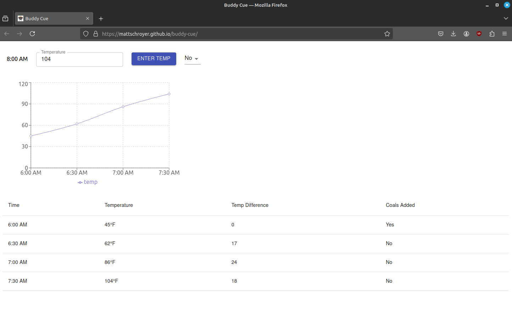
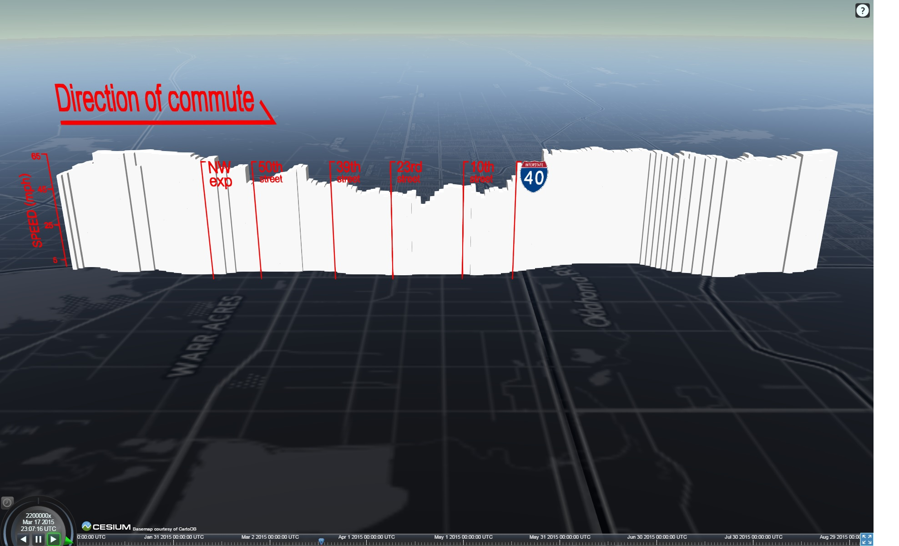
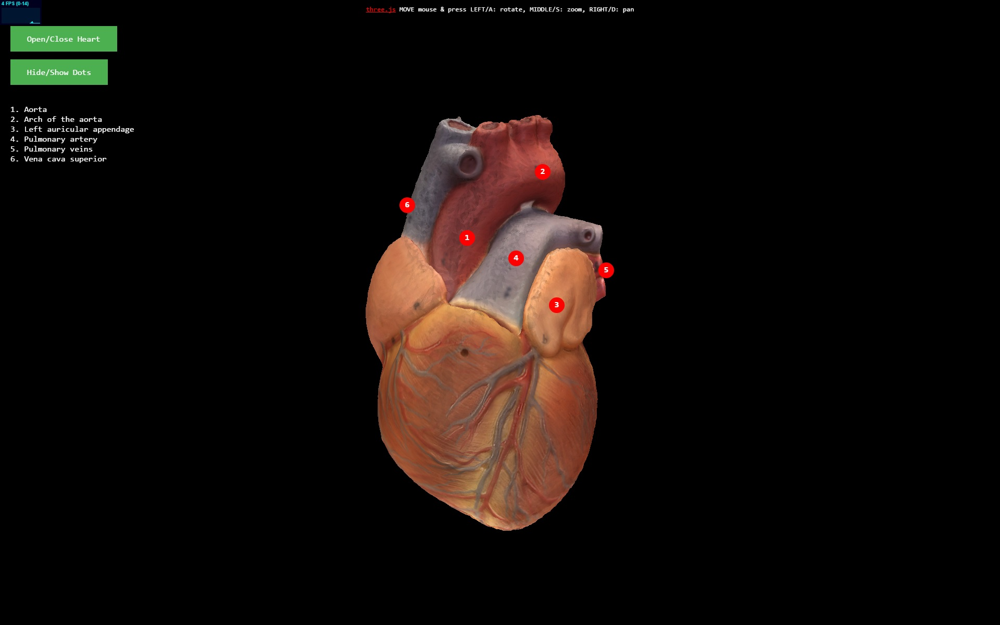
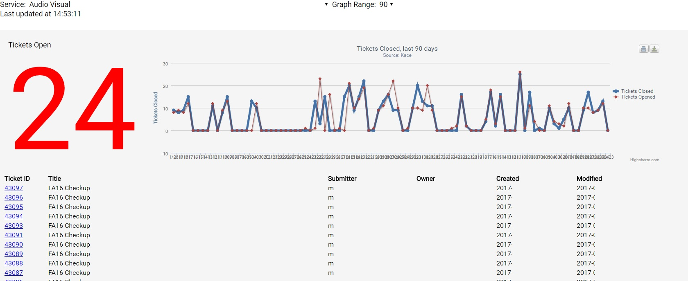
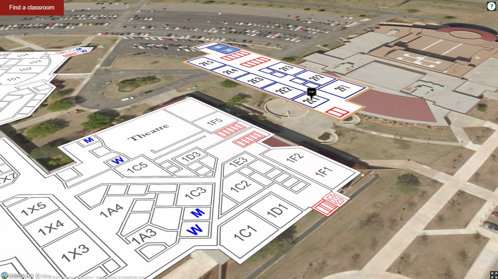
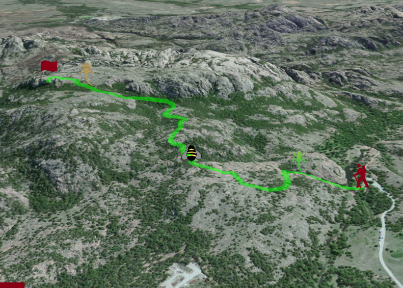

Working with JS, React, Arduinos, and other tools answer questions and find solutions.

Buddy Cue is a React SPA to simplify the time-intensive process of smoking pulled pork. It will generate a time estimate for pulled pork based on weight, and notify you if your temperatures are not meeting targets to finish on schedule.

A vizualization of a morning commute from January to August 2015 in the OKC metro area. GPS data was logged on an Android device, parsed with Python, and vizualized using Cesium.js and a CartoDB basemap.

Developed for a college anatomy class, this Three.js visualizes a model of a human heart. With this heart visualization, students can study the heart, even on a smartphone while they're on the bus. This digital version of the physical model was scanned using hundreds of photos, and digitized using Agisoft Photoscan. Three.js provides an easy way to render the .obj and .mtl files that are exported by Photoscan.

This is a simplified KACE dashboard, which allows the user to select from a number of available service providers, see the ticket list for the provider, and receive a chart showing historical ticket activity. User also can save the chart for reports or external use. Uses PHP5 and highcharts.js. Based on the Twitter Bootstrap for Kace Service Desk developed by Jason Rappaport of Drexel University.

A simple application to locate a classroom on the OCCC main campus and visualize multi-story floorplans in 3D. Uses HTML5, ajax, CesiumJS, and GIS files.

A virtual trip up Elk Mountain in Oklahoma, using HTML5, GIS files, Cesium.js, and Panellum.js. The user can visualize the path up the mountain, its relationship surrounding mixed grass prairie, and sample the flora and fauna (including the state reptile).